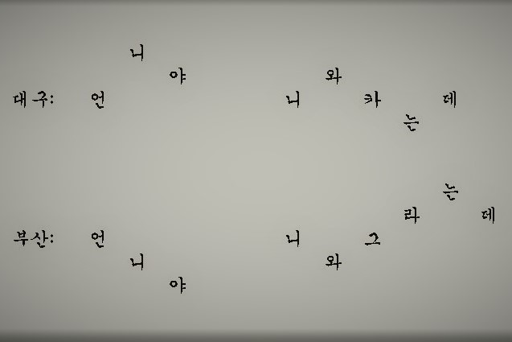

교육 취약 계층을 위한 서비스
가정 형편이 어렵거나 부모님의 무관심 속에 방치되는 아이들에게 무상으로 교육을 시켜주는 서비스입니다.
본 서비스는 아래와 같이 운영됩니다.

학교 폭력 예방 및 대처 서비스
학교 폭력을 당하는 학생들이 맘 편하게 얘기를 할 수 있는 공간을 만들어주고 신고한 후에 2차 피해가 발생하지 않도록 책임지는 서비스입니다.
본 서비스는 아래와 같이 운영됩니다.

사투리 학습 서비스
변역기와 비슷하게 자신이 한 말을 원하는 지방의 사투리로 들려주는 서비스입니다.
본 서비스는 아래와 같이 운영됩니다.

ASMR 서비스
공부할 때 듣기 좋은 ASMR이나 식당에서 청각으로 음식을 먹는 서비스입니다.
본 서비스는 아래와 같이 운영됩니다.